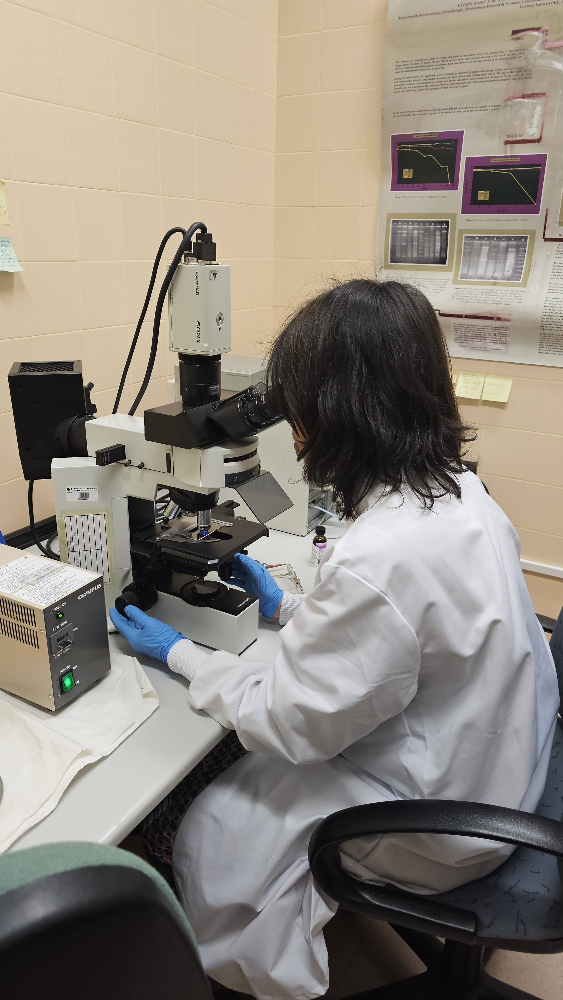
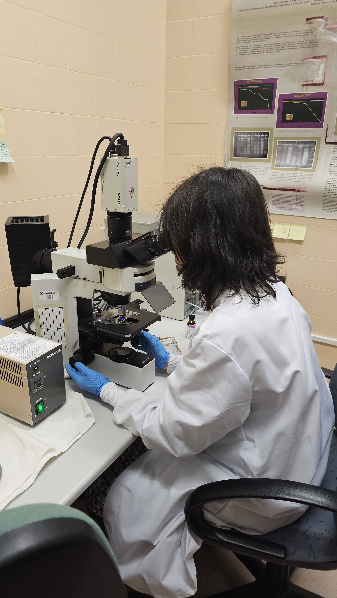

Mikroiker ikerketa taldeak hainbat arlo jorratzen ditu, osasunean, elikaduran eta ingurumenean eragin handia izan dezaketen mikroorganismoekin. Bestalde, talde honen helburu nagusiak mikroorganismo desberdinak aztertzea eta horien erabilerak ikertzea dira. Hori dela eta, Mikroiker Ikerkuntza taldearen lana medikuntza, farmazia eta biologiarekin zuzenki erlaziona daiteke.
Mikroiker Ikerkuntza taldeak mikroorganismoen azterketan eta karakterizazioan jarduten du. Nahiz eta bakterio mota desberdinetan lan egin, Salmonella generoko eta Kampilobakterio-ekin lan egiten dute. Bestalde, mikroorganismoen material genetikoarekin ere lan egiten dute, antimikrobianoekiko erresistentzia aztertuz.

 


Mikroorganismoen dibertsitatean ere adituak dira eta ingurumen desberdinetan agertzen diren bakterioak aztertzen dituzte. Hain zuzen ere, Añanako Gatz Haranean aurkitzen diren mikroorganismoen dibertsitatea ikertzen dute. Ekosistema horren ezaugarririk aipagarriena bere gazitasuna da, beraz, oso mikroorganismo bereziak aurki daitezke gazitasun horrekiko moldatu direnak.
Gaur egun, emakumeek garrantzi handia dute zientziaren munduan, eta aitorpen garrantzitsuak lortzen ari dira. Adibiderik argienetako bat Mikroiker ikerketa-taldea da, talde horretako kide gehienak emakumeak direlako. Hiru emakume hauek elkarrizketatzea erabaki dut, jendeak ikerketa-taldean duten rola zein den ezagutzeko, eta, bestalde, emakume bezala zer-nolako rola jokatzen duten zientziaren munduan.